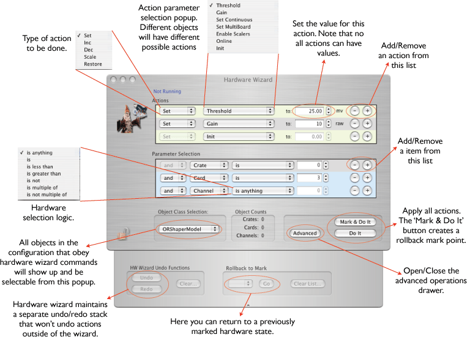

The hardware wizard is a tool that allows you to do multiple operations on groups of hardware channels. You can start this tool from the main menu bar by selecting Windows->Hardware Wizard from the main menu bar. It may also appear as an icon in the toolbar of the main configuration window, depending on how that window is customized.

In the setup shown above, the thresholds will be set to 25.00mV, the gains to a value of 10, and then an card-level init will be preformed on the shaper card in slot 3 of crate 0. All channels have been selected.
Differant objects may have differant selection criteria, i.e. the NCD experiment's multiplexer box is selected by box number and channel, rather than crate, card, channel as shown in the above example.
Note that only one class of objects can be controlled at a time.